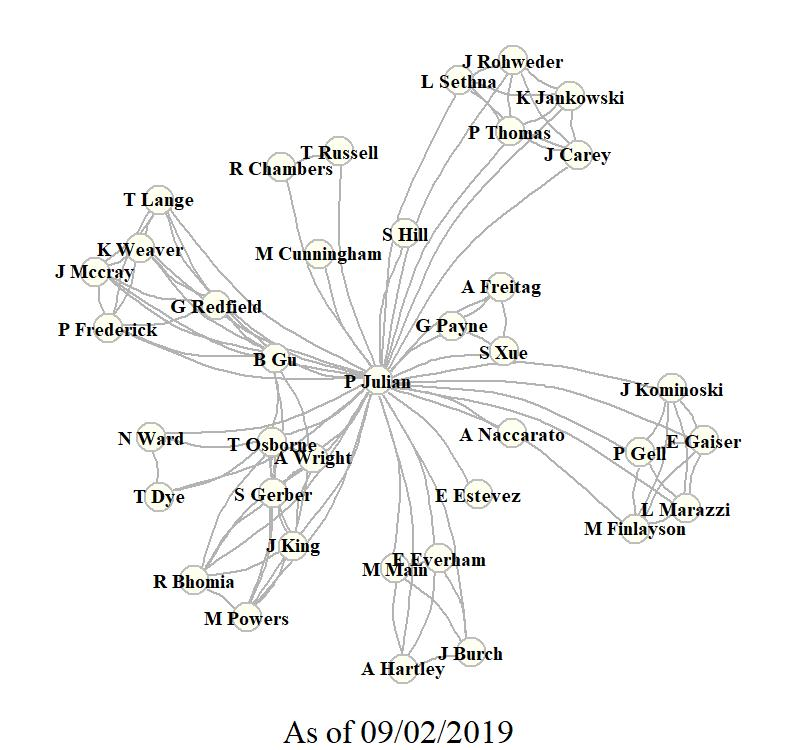

Science is only powerful when shared. (Unknown)

Google Scholar Network Analysis using the scholar r-package.
Google Scholar Profile
Peer Reviewed Literature
2020
Kominoski JS, Gaiser EE, Casta\(\tilde{n}\)eda-Moya E, Davis SE, Julian P, et al (Accepted) Disturbance legacies increase and synchronize nutrient concentrations and bacterial productivity in coastal ecosystems. Ecology.
Julian, P. Accepted. Getting the science right to protect and restore our environment. A critique of Lapointe et al (2019) Nitrogen enrichment, altered stoichiometry, and coral reef decline at Looe Key, Florida Keys, USA: a 3-decade study. Marine Biology.
2019
- Carey, J., K. Jankowski, , P. Julian, L. Sethna, P.K. Thomas and J.J. Rohweder. Exploring silica stoichiometry on a large floodplain riverscape. Frontiers in Ecology and Evolution 7:346.
- Julian, P. Book Review: Spatial Ecology and Conservation Modeling, Applications with R, R. Fletcher and M. Fortin. Springer, 2019. Austral Ecology.
- Julian, P., S. Gerber, R.K. Bhomia, J. King, T.Z. Osborne, A.L. Wright, M. Powers and J. Dombrowski. Evaluation of nutrient stoichiometric relationships among ecosystem compartments of a subtropical treatment wetland. Do we have “Redfield wetlands”? Ecological Processes. 8:20.
2018
- Julian, P. and T.Z. Osborne. From lake to estuary, the tale of two waters. A study of aquatic continuum biogeochemistry. Environmental Monitoring and Assessment. 190:96.
- Julian, P. Letter to editor regarding Surratt D, Shindle D, Yongshan W, et al. Letter to the Editor Regarding: Julian P, 2017. Assessment of Upper Taylor Slough water quality and implications for ecosystem management in Everglades National Park. Wetlands Ecology and Management. 26(3):249-251.
- Marazzi, L., C.M. Finlayson, P.A. Gell, P. Julian, J.S. Kominoski and E.E. Gaiser. Balancing Wetland Restoration Benefits to People and Nature. Solutions 9(3).
2017
2016
- Julian, P. Commentary on “Mitsch et al., 2015, Protecting the Florida Everglades wetlands with wetlands: Can stormwater phosphorus be reduced to oligotrophic conditions?” Ecological Engineering. 108: 333-337.
- Julian, P., B. Gu, and A.L. Wright. Mercury Stoichiometric Relationships in a Subtropical Peatland. Water Air Soil Pollut 227(12): 472.
- Julian, P., A.L. Wright, and T.Z. Osborne. Iron and Sulfur Porewater and Surface Water Biogeochemical Interactions in Subtropical Peatlands. Soil Science Society of America Journal 80(3): 794.
2015
- Julian, P. South Florida Coastal Sediment Ecological Risk Assessment. Bulletin of environmental contamination and toxicology 95(2): 188–193.
- Julian, P., and B. Gu. Mercury accumulation in largemouth bass (Micropterus salmoides Lacépède) within marsh ecosystems of the Florida Everglades, USA. Ecotoxicology 24(1): 202–214.
- Julian, P., B. Gu, and G. Redfield. Comment on and Reinterpretation of Gabriel et al. (2014) “Fish Mercury and Surface Water Sulfate Relationships in the Everglades Protection Area.” Environmental Management 55(1): 1–5.
2014
- Julian, P. Reply to “Mercury Bioaccumulation and Bioaccumulation Factors for Everglades Mosquitofish as Related to Sulfate: A Re-Analysis of Julian II (2013).” Bulletin of Environmental Contamination and Toxicology 93(5): 517–521.
2013
- Julian, P. Mercury Bio-concentration Factor in Mosquito Fish (Gambusia spp.) in the Florida Everglades. Bulletin of Environmental Contamination and Toxicology 90(3): 329–332.
- Julian, P. Comment on “Spatial and temporal phosphorus distribution changes in a large wetland ecosystem” by X. Zapata-Rios et al.: Commentary. Water Resources Research 49(4): 2312–2313.
- Julian, P. Mercury hotspot identification in Water Conservation Area 3, Florida, USA. Annals of GIS 19(2): 79–88.
- Julian, P., and M.W. Cunningham. Total mercury concentration in Florida black bear (Ursus americanus floridanus). Florida Scientist 76(1): 1 - 6.
2012
- Julian, P., E.M. Everham III, and M.B. Main. Influence of a Large-scale Removal of an Invasive Plant (Melaleuca quinquenervia) on Home-range Size and Habitat Selection by Female Florida Panthers (Puma concolor coryi) within Big Cypress National Preserve, Florida. Southeastern Naturalist 11(2): 337–348.
2011
- Julian, P. Home range dynamics of female Florida panthers in reponse to kitten production. Florida Scientist 74(4).: 215 - 223.
2010
- Julian, P. and E.D. Estevez. Historical Bathymetric Analysis of Tampa Bay. Proceeding for Tampa Bay Area Scientific Information Symposium, BASIS 5:20-23 October 2009, St. Petersburg, FL.
Technical Literature
2019
- Julian, P., A. Freitag, G.G. Payne, and S.K. Xue. Chapter 3A: Water Quality in the Everglades Protection Areas. In 2018 South Florida Environmental Report. South Florida Water Management District, West Palm Beach, FL. Link
- Julian, P., B. Gu, and K. Weaver (Eds). Chapter 3B: Mercury and Sulfur Environmental Assessment for the Everglades. In 2018 South Florida Environmental Report. South Florida Water Management District, West Palm Beach, FL.Link
2018
- Julian, P., A. Freitag, G.G. Payne, S.K. Xue and K. McClure. Chapter 3A: Water Quality in the Everglades Protection Areas. In 2018 South Florida Environmental Report. South Florida Water Management District, West Palm Beach, FL. Link
- Julian, P., B. Gu, and K. Weaver (Eds). Chapter 3B: Mercury and Sulfur Environmental Assessment for the Everglades. In 2018 South Florida Environmental Report. South Florida Water Management District, West Palm Beach, FL. Link
2017
- Julian, P., et al. Numeric Interpretation of Narrative Standards for the L-28 Interceptor Canal and Big Cypress National Preserve. Technical Support Document: Western Everglades Planning Project. Florida Department of Environmental Protection, Tallahassee, FL.
- Julian, P., G.G. Payne, and S.K. Xue. Chapter 3A: Water Quality in the Everglades Protection Areas. In 2017 South Florida Environmental Report. South Florida Water Management District, West Palm Beach, FL.
- Julian, P., B. Gu, and K. Weaver (Eds). Chapter 3B: Mercury and Sulfur Environmental Assessment for the Everglades. In 2017 South Florida Environmental Report. South Florida Water Management District, West Palm Beach, FL.
- Julian, P., R.K. Bhomia Transect Study: Surface Water Quality Monitoring and Analysis. In: Reddy KR (ed) Evaluation of Soil Biogeochemical Properties Influcing Phosphorus Flux in the Everglades Stormwater Treatment Areas (STAs): 2016-17 Annual Report. University of Florida, Gainesville, FL, pp 317–444
2016
- Julian, P., G.G. Payne, and S.K. Xue. Chapter 3A: Water Quality in the Everglades Protection Areas. In 2016 South Florida Environmental Report. South Florida Water Management District, West Palm Beach, FL.
- Julian, P., B. Gu, G. Redfield, and K. Weaver. Chapter 3B: Mercury and Sulfur Environmental Assessment for the Everglades. In 2016 South Florida Environmental Report. South Florida Water Management District, West Palm Beach, FL.
2015
- Julian, P., G.G. Payne, and S.K. Xue. Chapter 3A: Water Quality in the Everglades Protection Areas. In 2015 South Florida Environmental Report. South Florida Water Management District, West Palm Beach, FL.
- Julian, P., B. Gu, G. Redfield, K. Weaver, T. Lange, P. Frederick, J.M. McCray, A.L. Wright, F.E. Dierberg, T.A. DeBusk, M. Jerauld, W.F. DeBusk, H.. Bae, and A. Ogram. Chapter 3B: Mercury and Sulfur Environmental Assessment for the Everglades. In 2015 South Florida Environmental Report. South Florida Water Management District, West Palm Beach, FL.
2014
- Julian, P., G.G. Payne, and S.K. Xue. Chapter 3A: Water Quality in the Everglades Protection Areas. In 2014 South Florida Environmental Report. South Florida Water Management District, West Palm Beach, FL.
- Julian, P., B. Gu, R. Frydenborg, T. Lange, A.L. Wright, and J.M. McCray. Chapter 3B: Mercury and Sulfur Environmental Assessment for the Everglades. In 2014 South Florida Environmental Report. South Florida Water Management District, West Palm Beach, FL.
2013
- Julian, P., G.G. Payne, and S.K. Xue. Chapter 3A: Water Quality in the Everglades Protection Areas. In 2013 South Florida Environmental Report. South Florida Water Management District, West Palm Beach, FL.
2012
- Julian, P., and S. Hill. A.R.M. Loxahatchee National Wildlife Refuge Total Phosphorus Outlier Analysis and Proposed Alternative Screening Criterion: Distribution Independent Outlier Analysis. Everglades Technical Oversight Committee.
2011
- Carlson, P., L.A. Yarbro, A. Ritzmann, H. McKnight, A. Viaud, K. Almeida, C. Nosach and P. Julian. Seagrass Recovery in Tampa Bay: Fine-Scale Spatial Analysis to Assess Progress and Refine Restoration Targets. Tampa Bay Estuary Program Report FWC FWRI File Code F2698-F.
2005
- Dixon, L.K. and P. Julian. Phillippi Creek Optical Brightener Investigation for Sarasota County Water Resources. Mote Marine Lab Technical Report No. 1038.
Thesis/Dissertation
Dissertation
- Biogeochemical controls of water column productivity and nutrient cycling in semitropical wetlands – A case study from the Everglades Stormwater Treatment Areas. University of Florida Ph.D. Soil and Water Science (Exit Seminar Presentation link).
Thesis
- Habitat Selection by the Florida Panther in Response to Meleleuca Removal within Big Cypress National Preserve. Florida Gulf Coast Universtiy M.Sc. Environmental Science.